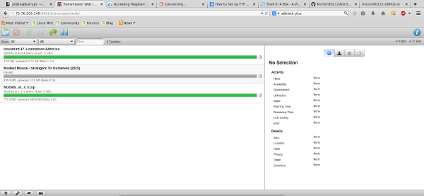
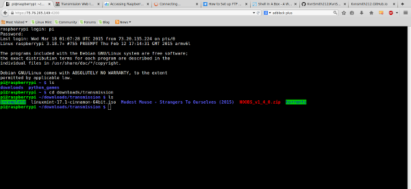
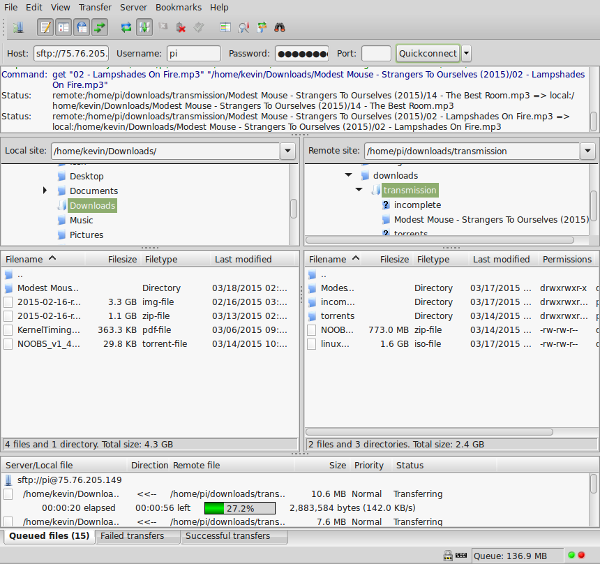

The Raspberry Pi as a Download and File Transfer Tool
A while back, I got a raspberry pi for school to use while studying assembly, particularly ARM v6 assembly. I recently got an idea of something I could use it for, and took advantage of spring break to get to work. The idea behind the project was gain a little more experience with linux (always helpful) and to set up my raspberry pi as a home server that I could log into, download, and transfer files from. This way, I could save and download files from the raspberry pi and access them anywhere from any computer.
The topics/resources needed to accomplish this, in no apparent order:
- Setup the raspberry pi with the OS of your choice. I chose the default Raspbian.
- Port forwarding so that I could access my pi from outside my home network.
- Transmission so that I could torrent from any browser using transmissions web interface.
- FTP so that I could transfer files.
- Shell In A Box so that I could log onto my pi from any browser without the use of ssh.
Once I got port forwarding and transmission set up, I was able to log into the web interface using my home ip. I simply specify the address of the torrent and watch it download to my pi.
{kind=link}
I may not always have a linux box around to ssh from, but with Shell In A Box I can easily log into my pi using any web browser. Here you can see that all files from transmission downloaded to my pi.
{kind=link}
Here I'm using filezilla to transfer the files via ftp to my laptop. It works perfectly so far, and I'm very happy with the final setup.
{kind=link}